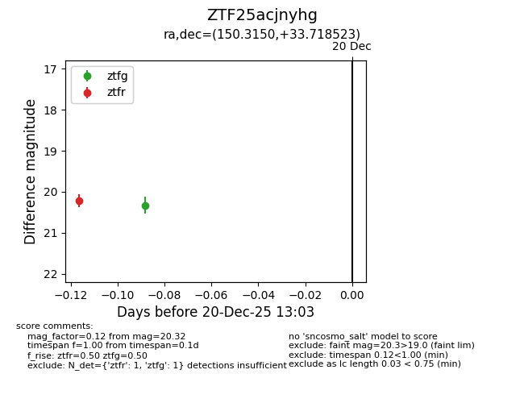
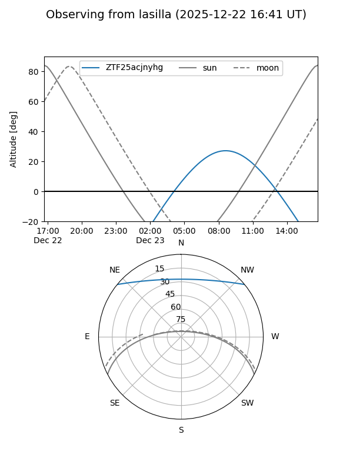

ZTF25acjnyhg
Target ZTF25acjnyhg at 2025-12-31 17:00
Aliases and brokers:
FINK:
Lasair:
ALeRCE:
alt names
ZTF25acjnyhg (ztf,fink_ztf)
Coordinates:
equatorial (ra, dec) = 150.3150,+33.71852
equatorial (HMS+DMS) = 10:01:15.60,+33:43:06.68
galactic (l, b) = (192.0456,+52.98883)
Flags:
Photometry:
last ztfg=20.32, ztfr=20.22
1 ztfg, 1 ztfr detections
Lightcurve

Visibility


Additional plots